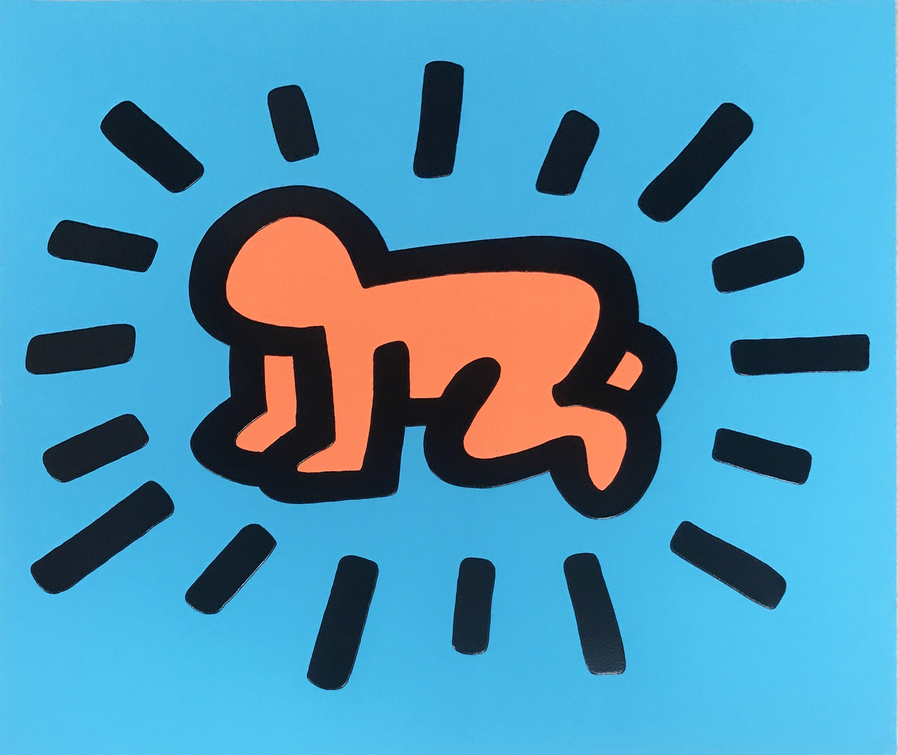
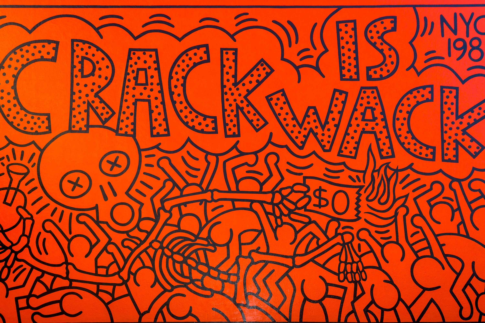
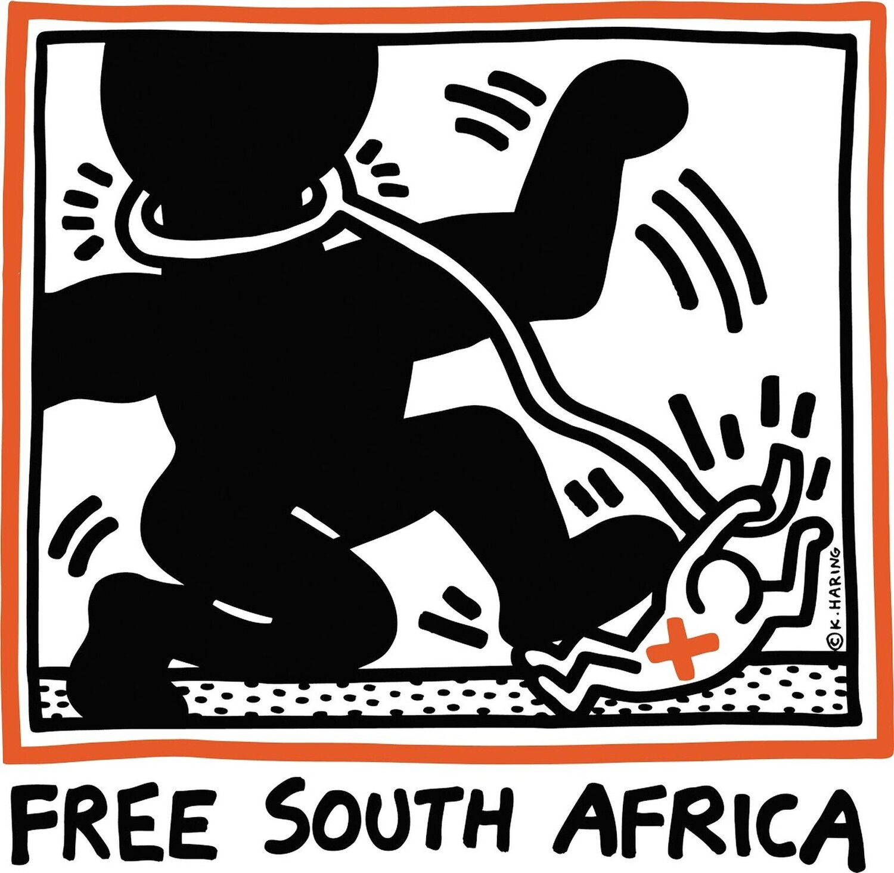
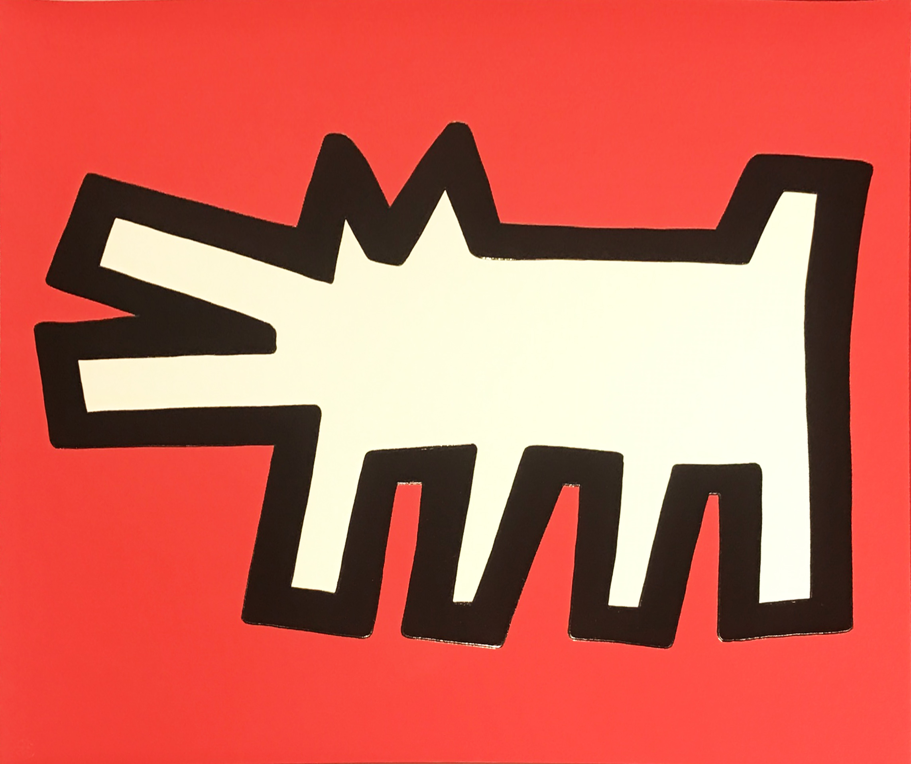
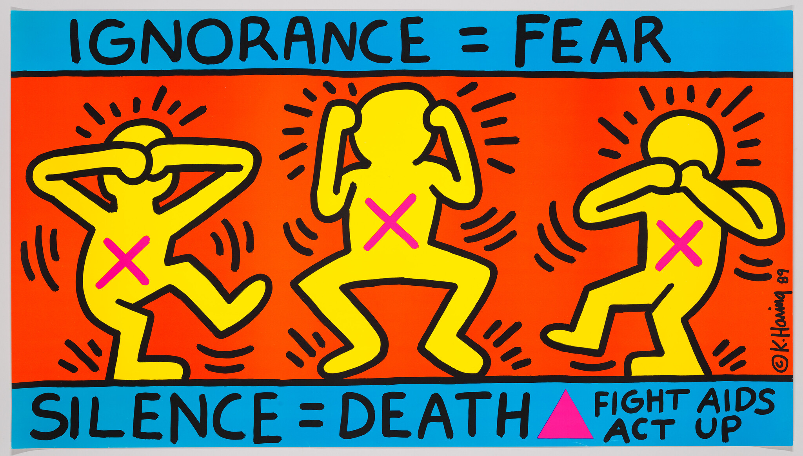

Most Representative Works by Keith Haring
1. Radiant Baby (c. 1980–1990)

The most recognizable symbol of Keith Haring's career, functioning almost as his personal signature tag. Depicting an infant crawling on all fours surrounded by radiant kinetic lines, it represents human purity, vitality, boundless energy, and hopes for the future of society.
2. Crack is Wack (1986)

A landmark public mural painted on an outdoor handball court along the FDR Drive in East Harlem, New York City. Haring created it without permission as a direct, urgent warning against the devastating crack cocaine epidemic that heavily impacted underserved communities during the mid-1980s.
3. Free South Africa (1985)

Created as a direct political response to the apartheid regime in South Africa. Haring self-funded the printing of roughly 20,000 posters and button pins to distribute freely around New York City, featuring a large black figure trampling the chains of an oppressor to advocate for racial equality.
4. Barking Dog (1982–1986)

One of Haring's most pervasive motifs, appearing throughout his New York subway chalk drawings, screenprints, and large-scale painted steel sculptures. The barking dog operates as a dual metaphor: standing both for state surveillance and aggressive authority, as well as an alert warning call against looming danger.
5. Ignorance = Fear / Silence = Death (1989)

A defining activist poster created in collaboration with the direct-action group ACT UP. Reinterpreting the traditional "see no evil, hear no evil, speak no evil" maxim, the piece denounces public ignorance and government complacency concerning the HIV/AIDS crisis, demanding education, support, and medical care.